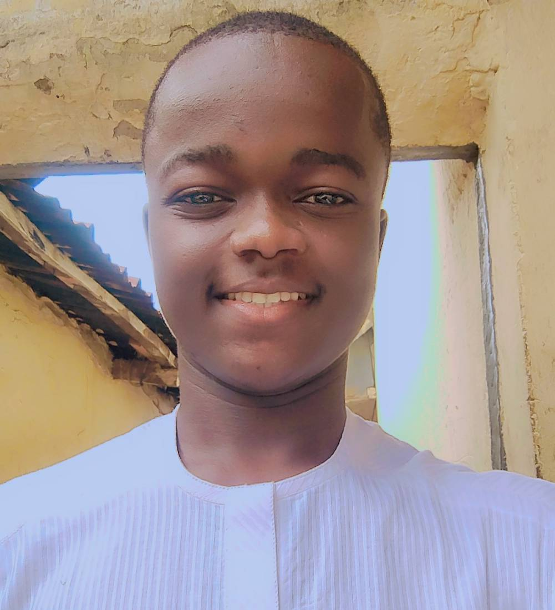

Aliyu Abubakar Mohammed | WDD 130
Hello! My Name is Aliyu Abubakar Mohammed, From State University Of Keffi, Nasarawa State.
IT Student, In ICT Department, College Of Education Akwanga, Nasarawa State
Hello! My Name is Aliyu Abubakar Mohammed, From State University Of Keffi, Nasarawa State.
IT Student, In ICT Department, College Of Education Akwanga, Nasarawa State